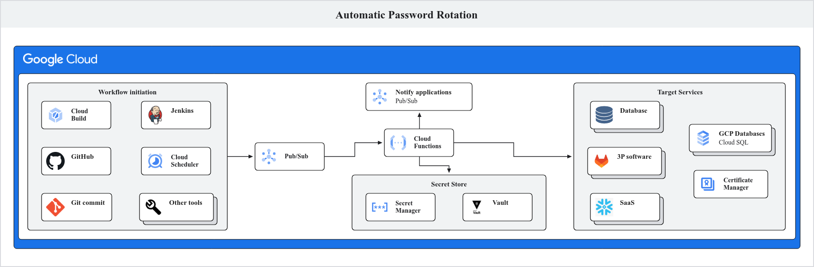
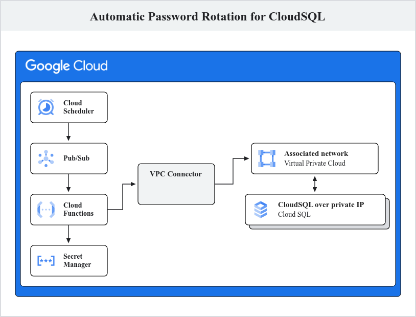

Overview¶
Secrets rotation is a broadly accepted best practice across the information technology industry. However, often times it is cumbersome and disruptive process. In this guide you will use Google Cloud tools to automate the process of rotating passwords for a Cloud SQL instance. This method could easily be extended to other tools and types of secrets.
Storing passwords in Google Cloud¶
In Google Cloud, secrets including passwords can be stored using many different tools including common open source tools such as Vault, however in this guide, you will use Secret Manager, Google Cloud's fully managed product for securely storing secrets. Regardless of the tool you use, passwords stored should be further secured. When using Secret Manager, following are some of the ways you can further secure your secrets:
-
Limiting access : The secrets should be readable writable only through the Service Accounts via IAM roles. The principle of least privilege must be followed while granting roles to the service accounts.
-
Encryption : The secrets should be encrypted. Secret Manager encrypts the secret at rest using AES-256 by default. But you can use your own encryption keys, customer-managed encryption keys (CMEK) to encrypt your secret at rest. For details, see Enable customer-managed encryption keys for Secret Manager.
-
Password rotation : The passwords stored in the secret manager should be rotated on a regular basis to reduce the risk of a security incident.
Why password rotation¶
Security best practices require us to regularly rotate the passwords in our stack. Changing the password mitigates the risk in the event where passwords are compromised.
How to rotate passwords¶
Manually rotating the passwords is an antipattern and should not be done as it exposes the password to the human rotating it and may result in security and system incidents. Manual rotation processes also introduce the risk that the rotation isn't actually performed due to human error, for example forgetting or typos.
This necessitates having a workflow that automates password rotation. The password could be of an application, a database, a third-party service or a SaaS vendor etc.
Automatic password rotation¶
Typically, rotating a password requires these steps:
- Change the password in the underlying software or system
(such as applications,databases, SaaS).
-
Update Secret Manager to store the new password.
-
Restart the applications that use that password. This will make the
application source the latest passwords.
The following architecture represents a general design for a systems that can rotate password for any underlying software/system.

Workflow¶
- A pipeline or a cloud scheduler job sends a message to a pub/sub topic. The message contains the information about the password that is to be rotated. For example, this information may include secret ID in secret manager, database instance and username if it is a database password.
- The message arriving to the pub/sub topic triggers a Cloud Run Function that reads the message and gathers information as supplied in the message.
- The function changes the password in the corresponding system. For example, if the message contained a database instance, database name and user,the function changes the password for that user in the given database.
- The function updates the password in secret manager to reflect the new password. It knows what secret ID to update since it was provided in the pub/sub message.
- The function publishes a message to a different pub/sub topic indicating that the password has been rotated. This topic can be subscribed any application or system that may want to know in the event of password rotation, whether to re-start themselves or perform any other task.
Example deployment for automatic password rotation in CloudSQL¶
The following architecture demonstrates a way to automatically rotate CloudSQL password.

Workflow of the example deployment¶
- A Cloud Scheduler job is scheduled to run every 1st day on the month. The jobs publishes a message to a Pub/Sub topic containing secret ID, Cloud SQL instance name, database, region and database user in the payload.
- The message arrival on the pub/sub topic triggers a Cloud Run Function, which uses the information provided in the message to connect to the CloudSQL instance via Serverless VPC Connector and changes the password. The function uses a service account that has IAM roles required to connect to the Cloud Sql instance.
- The function then updates the secret in Secret Manager.
Note : The architecture doesn't show the flow to restart the application after the password rotation as shown in thee Generic architecture but it can be added easily with minimal changes to the Terraform code.
Deploy the architecture¶
The code to build the architecture has been provided with this repository. Follow these instructions to create the architecture and use it:
-
Open Cloud Shell on Google Cloud Console and log in with your credentials.
-
If you want to use an existing project, get
role/project.ownerrole on the project and set the environment in Cloud Shell as shown below. Then, move to step 4.Replace
<PROJECT_ID>with the ID of the existing project. -
If you want to create a new GCP project run the following commands in Cloud Shell.
#set shell environment variable export PROJECT_ID=<PROJECT_ID> #create project gcloud projects create ${PROJECT_ID} --folder=<FOLDER_ID> #associate the project with billing account gcloud billing projects link ${PROJECT_ID} --billing-account=<BILLING_ACCOUNT_ID>Replace
<PROJECT_ID>with the ID of the new project. Replace<BILLING_ACCOUNT_ID>with the billing account ID that the project should be associated with. -
Set the project ID in Cloud Shell and enable APIs in the project:
-
Download the Git repository containing the code to build the example architecture:
cd ~ git clone https://github.com/GoogleCloudPlatform/platform-engineering cd platform-engineering/reference-architectures/automated-password-rotation/terraform terraform init terraform plan -var "project_id=$PROJECT_ID" terraform apply -var "project_id=$PROJECT_ID" --auto-approveNote: It takes around 30 mins for the entire architecture to get deployed.
Review the deployed architecture¶
Once the Terraform apply has successfully finished, the example architecture will be deployed in the your Google Cloud project. Before exercising the rotation process, review and verify the deployment in the Google Cloud Console.
Review Cloud SQL database¶
- In the Cloud Console, using the naviagion menu select
Databases > SQL. Confirm thatcloudsql-for-pgis present in the instance list. - Click on
cloudsql-for-pg, to open the instance details page. - In the left hand menu select
Users. Confirm you see a user with the nameuser1. - In the left hand menu select
Databases. Confirm you see see a database namedtest. - In the left hand menu select
Overview. - In the
Connect to this instancesection, note that onlyPrivate IP addressis present and no public IP address. This restricts access to the instance over public network.
Review Secret Manager¶
- In the Cloud Console, using the naviagion menu select
Security > Secret Manager. Confirm thatcloudsql-pswdis present in the list. - Click on
cloudsql-pswd. - Click three dots icon and select
View secret valueto view the password for Cloud SQL database. - Copy the secret value, you will use this in the next section to confirm access to the Cloud SQL instance.
Review Cloud Scheduler job¶
- In the Cloud Console, using the naviagion menu select
Integration Services > Cloud Scheduler. Confirm thatpassword-rotator-jobis present in the Scheduler Jobs list. - Click on
password-rotator-job, confirm it is configured to run on 1st of every month. -
Click
Continueto see execution configuration. Confirm the following settings:Target typeis Pub/SubSelect a Cloud Pub/Sub topicis set topswd-rotation-topicMessage bodycontains a JSON object with the details of the Cloud SQL isntance and secret to be rotated.
-
Click
Cancel, to exit the Cloud Scheduler job details.
Review Pub/Sub topic configuration¶
- In the Cloud Console, using the naviagion menu select
Analytics > Pub/Sub. - In the left hand menu select
Topic. Confirm thatpswd-rotation-topicis present in the topics list. - Click on
pswd-rotation-topic. - In the
Subscriptionstab, click on Subscription ID for the rotator Cloud Function. - Click on the
Detailstab. Confirm, theAudiencetag shows the rotator Cloud Function. - In the left hand menu select
Topic. - Click on
pswd-rotation-topic. - Click on the
Detailstab. - Click on the schema in the
Schema namefield. - In the
Details, confirm that the schema contains these keys:secretid,instance_name,db_user,db_nameanddb_location. These keys will be used to identify what database and user password is to be rotated.
Review Cloud Run Function¶
- In the Cloud Console, using the naviagion menu select
Serverless > Cloud Run Functions. Confirm thatpswd_rotator_functionis present in the list. - Click on
pswd_rotator_function. - Click on the
Triggertab. Confirm that the fieldReceive events fromhas the Pub/Sub topicpswd-rotation-topic. This indicates that the function will run when a message arrives to that topic. - Click on the
Detailstab. Confirm that underNetwork SettingsVPC connector is set toconnector-for-sql. This allows the function to connect to the CloudSQL over private IPs. - Click on the
Sourcetab to see the python code that the function executes.
Note: For the purpose of this tutorial, the secret is accessible to the human users and not encrypted. See the section and Secret Manager best practice
Verify that you are able to connect to the Cloud SQL instance¶
- In the Cloud Console, using the naviagion menu select
Databases > SQL - Click on
cloudsql-for-pg - In the left hand menu select
Cloud SQL Studio. - In
Databasedropdown, choosetest. - In
Userdropdown, chooseuser1. - In
Passwordtextbox paste the password copied from thecloudsql-pswdsecret. - Click
Authenticate. Confirm you were able to log in to the database.
Rotate the Cloud SQL password¶
Typically, the Cloud Scheduler will automatically run on 1st day of every month triggering password rotation. However, for this tutorial you will run the Cloud Scheduler job manually, which causes the Cloud Run Function to generate a new password, update it in Cloud SQL and store it in Secret Manager.
- In the Cloud Console, using the naviagion menu select
Integration Services > Cloud Scheduler. - For the scheduler job
password-rotator-job. Click the three dots icon and selectForce run. - Verify that the
Status of last executionshowsSuccess. - In the Cloud Console, using the naviagion menu select
Serverless > Cloud Run Functions. - Click function named
pswd_rotator_function. - Select the
Logstab. - Review the logs and verify the function has run and completed without
errors. Successful completion will be noted with log entries containing
Secret cloudsql-pswd changed in Secret Manager!,DB password changed successfully!andDB password verified successfully!.
Test the new password¶
- In the Cloud Console, using the naviagion menu select
Security > Secret Manager. Confirm thatcloudsql-pswdis present in the list. - Click on
cloudsql-pswd. Note you should now see a new version, version 2 of the secret. - Click three dots icon and select
View secret valueto view the password for Cloud SQL database. - Copy the secret value.
- In the Cloud Console, using the naviagion menu select
Databases > SQL - Click on
cloudsql-for-pg - In the left hand menu select
Cloud SQL Studio. - In
Databasedropdown, choosetest. - In
Userdropdown, chooseuser1. - In
Passwordtextbox paste the password copied from thecloudsql-pswdsecret. - Click
Authenticate. Confirm you were able to log in to the database.
Destroy the architecture¶
cd platform-engineering/reference-architectures/automated-password-rotation/terraform
terraform init
terraform plan -var "project_id=$PROJECT_ID"
terraform destroy -var "project_id=$PROJECT_ID" --auto-approve
Conclusion¶
In this tutorial, you saw a way to automate password rotation on Google Cloud. First, you saw a generic reference architecture that can be used to automate password rotation in any password management system. In the later section, you saw an example deployment that uses Google Cloud services to rotate password of Cloud Sql database in Google Cloud Secret Manager.
Implementing an automatic flow to rotate passwords takes away manual overhead and provide seamless way to tighten your password security. It is recommended to create an automation flow that runs on a regular schedule but can also be easily triggered manually when needed. There can be many variations of this architecture that can be adopted. For example, you can directly trigger a Cloud Run Function from a Google Cloud Scheduler job without sending a message to pub/sub if you don't want to broadcast the password rotation. You should identify a flow that fits your organization requirements and modify the reference architecture to implement it.